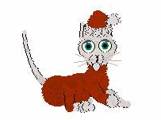
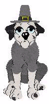

Hex edited Clothes for Petz 4
~~~~~~~~~~~~~~~~~~~~~~~~~~~~~
These are the very few clothes that I've made for the Petz 4 game. I don't
have a great interest in making petz clothes, mainly because there have
always been a lot of people out there making great stuff pretty much since
the game first came out. But there were a couple of things that people
wanted to know how to do, and here they are, as well as some omissions from
clothing sets (Pilgrim and Santa).

Wingz for your petz

Santa Sweater

Pilgrim Sweater

Wigz for your petz
/
Dreadlocks 2 /
Judge's wigz